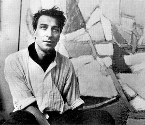

Sa vie, Son histoire
Nicolas de Staël (Saint-Petersbourg, 1914 - Antibes, 1955) La carrière de Nicolas de Staël s'étale sur quinze ans, à travers plus d'un millier d'œuvres, influencées par Cézanne, Matisse, Van Gogh, Braque, Soutine, etc Il n'a gardé de son ascendance balte qu'un fond de romantisme et le sentiment d'un vertige désespéré, longtemps dominés par l'Éducation revue en Europe. Cet oeuvre se déroule sur dix ans, dans une violence de création et une lucidité rares. Il entreprend un retournement de sa vision entre 1951 et 1952, passant d'une non-figuration dont il est, malgré lui, l'un des champions à une approche de la réalité résolument neuve. La très forte personnalité du peintre alliée à une intelligence aigu de la peinture et une fine perception de l'espace-lumière engendrent quelques centaines d'oeuvres-clé de l'histoire de l'art contemporain. Des expositions dont nous mesurons chaque jour davantage la vérité ou la vertu novatrice ont fait connaitre ses travaux àtravers le monde. Le Catalogue Raisonné paru en 1968, a été révisé, completé et reclassé par Françoise de Staël en 1997. Les Èditions Ides et Calendes ont publié ce nouveau Catalogue Raisonné de l'oeuvre peint, accompagné d'un nombre important de lettres de l'artiste. Il offre une approche décisive de sa démarche péremptoire. Sa technique évolue de l'épaisseur des empatements au couteau à une matière diaphane sans perdre ni sa richesse ni la justesse de ses rapports colorés. Quelques soient les formats le lyrisme se maintient à un diapason élevé, comme si le destin imposait à l'artiste une trajectoire constamment tendue à l'extrème pour engendrer un rapport renouvelé avec le réel.